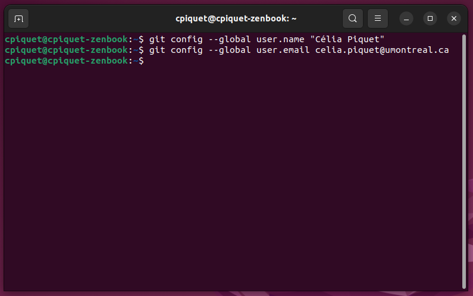

Gros plan sur : Git
Qu'est-ce que Git ?
Git est un VCS décentralisé. Il utilise donc un dépôt distant et un dépôt local sur la machine de chaque utilisateur pour gérer leur code. Pour le dépôt distant, il est nécessaire d'utiliser un service en ligne qui hébergera le code. Il existe plusieurs services en ligne qui permettent d'herberger des dépôts distants Git : Github, Gitlab, Bitbucket, etc. Bien qu'ils soient différents dans leur manipulation, chacun de ces services se basent sur les mêmes principes de Git. Vous pourrez explorer ces services à travers les différentes démonstrations qui suivront.
Comment fonctionne Git ?
Il est important de comprendre que lorsque nous utilisons Git notre code navigue finalement entre
différents états ou zones (voir image ci-contre).
Les deux principales zones étant le dépôt local et le dépôt distant.
Si le dépôt distant se résume à un service
web externe qui hébergera notre code (comme Github ou Gitlab),
le dépôt local est, en revanche, lui-même composé de plusieurs zones de travail : le Working
directory, le Stage et le Repository.
Autrement dit :
- Lorsque je crée ou modifie un fichier de code sur ma machine, il est initialement dans mon Working directory.
- Lorsque je suis satisfaite de ce fichier, je vais le passer au Stage qui permet de garder en local cette bonne version de fichier.
- Lorsque j'ai un ou plusieurs fichiers en Stage, je peux passer tous les fichiers du Stage en Repository. Cette étape permet d'empacter ces fichiers et d'y mettre un commentaire pour mieux le repérer plus tard.
- Enfin, lorsque mon paquet de fichiers est prêt, je peux l'envoyer sur mon dépôt distant pour qu'il soit sauvegardé puis partager avec tous les utilisateurs de ce dépôt.
Installer et initialiser Git sur sa machine
- Rendez-vous sur le site officiel de Git et téléchargez la dernière version disponible pour votre système d'exploitation.
- Exécutez le fichier téléchargé.
- Appuyez sur Suivant à chaque fenêtre puis sur Installer. Lors de l’installation, laissez toutes les options par défaut, elles conviennent bien.
- Si vous êtes sur Windows, cliquez sur "Launch Git Bash" puis "Finish". Sur Mac, cette option n'est pas proposée, ouvrez à la place un Terminal.
- Que vous soyez sur Windows ou sur Mac, vous devriez maintenant avoir un terminal face à vous.
- Dans ce terminal, entrez la commande suivante pour initialiser votre nom d'utilisateur : git config --global user.name "John Doe"
- Toujours dans ce terminal, entrez la commande suivante pour initaliser votre adresse mail : git config --global user.email johndoe@example.com 
- Bravo, Git est maintenant fonctionnel sur votre machine ! Maintenant, pour chaque
projet informatique il vous suffira de créer un dépôt local et un dépôt distant.
Pour savoir comment faire, choisissez un tutoriel parmi les trois proposés dans la section Services en ligne : Github, Gitlab ou Bitbucket.


Terminal classique sur une distribution Linux.

Termninal Git Bash sur Windows.